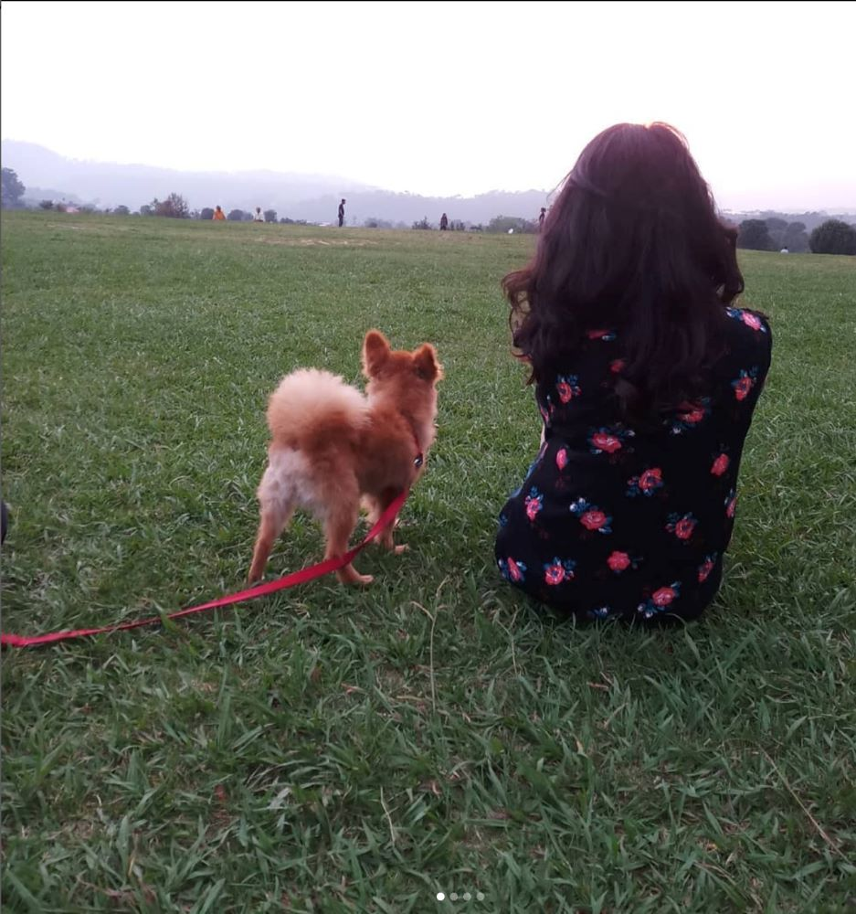

About Me
My name is Shruti Sood. My date of birth is August 2nd,1999. I am from India. I did graduation in "commerce". I liked accounting and finance but slowly I started realizing that I was not actually passionate about it. I always wanted to do a design program and thus, here I am, I decided to change my career and opted for this program because I believe "it's never too late to learn new things". I really like the below quote said by "Bapu".
"Live as if you were to die tomorrow and learn as if you were to live forever". - "Mahatma Gandhi"
Interests
I love art and creativity. I also like to play badminton. During my high school time I was a good badminton player. I love travelling a lot. It's my dream to travel the world. I really like visiting historical places and know about their histories. I want to visit historical places of every country. I love to spend my time with dogs. It's my dream to build shelters one day for the stray animals in India. I also like music and would love to learn guitar one day.
Hobbies
Whenever I have free time, I usually do one of the following activities-
- Painting
- Reading Fiction Novels
- Play badminton
- Spend time with my dog when I was in India
- listen music
- Watch my favourite series
- Cooking
- etc